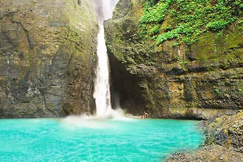

Pagsanjan Falls in Laguna is the Philippines' most thrilling waterfall experience — a 2-hour bamboo banca ride through a dramatic gorge of towering cliffs, rushing rapids, and lush jungle, culminating in a thundering 100-foot cascade and a daring plunge through the falls on a bamboo raft.

Pagsanjan Falls — officially known as Cavinti Falls or Magdapio Falls — is the most famous waterfall in the Philippines and one of the most exhilarating natural experiences in Southeast Asia. Located in the municipality of Pagsanjan, Laguna, about 100 km southeast of Manila, the falls are reached by a legendary 2-hour boat journey through the Pagsanjan Gorge — a dramatic canyon of 90-meter limestone and volcanic rock cliffs draped in tropical jungle.
The journey begins in Pagsanjan town, where skilled local boatmen (called bangkeros) pole and paddle bamboo banca boats upstream through 14 shooting rapids, navigating the narrow gorge with extraordinary skill. The gorge walls rise dramatically on both sides, blocking out the sky and creating a cathedral-like atmosphere of rushing water, dripping ferns, and echoing cliffs.
At the end of the gorge, the Pagsanjan Falls thunders down 100 feet into a natural pool called the Devil's Pool. Visitors can ride a bamboo raft directly under the falls — an unforgettable experience of raw natural power. The return journey downstream is even more thrilling, as the banca shoots back through the same rapids at speed.
Pagsanjan is in Laguna province, about 100 km southeast of Manila. The journey takes 2₱3 hours by bus or car.
Take a JAC Liner or DLTB bus from Buendia (Pasay) or Cubao to Santa Cruz, Laguna. From Santa Cruz, take a jeepney or tricycle to Pagsanjan town (about 15 minutes).
Manila to Santa Cruz: ~2₱2.5 hrs | ~₱120–₱160Drive via SLEX — Calamba exit — Laguna Lake Highway — Pagsanjan. Having your own vehicle gives flexibility to combine with other Laguna destinations like Rizal Shrine in Calamba.
Drive: ~2₱2.5 hours | Parking at the boat stationAll visitors must register at the Pagsanjan Tourism Office at the boat station. You'll be assigned two bangkeros (boatmen) per banca. The boat ride upstream takes about 1.5₱2 hours each way.
Boat fee: ~₱700–₱900 per person | Full trip: ~4₱5 hoursAt the falls, you can pay extra to ride a bamboo raft directly under the Pagsanjan Falls into the Devil's Pool. This is the highlight of the trip — a drenching, thundering, unforgettable experience. Life jackets are provided.
Raft fee: ~₱150–₱200 extra | Bring a waterproof bagClick any pin to explore Pagsanjan and nearby attractions in Laguna.
Pagsanjan is a perfect day trip from Manila — combine it with Rizal Shrine in Calamba for a full Laguna heritage and nature day.
Leave Manila early to beat traffic on SLEX. The drive to Pagsanjan takes 2₱2.5 hours. Aim to arrive at the boat station by 7:30₱8:00 AM to get an early slot.
Register at the Pagsanjan Tourism Office, pay the boat fee, and meet your two assigned bangkeros. Don your life jacket and board the bamboo banca for the upstream journey.
The 1.5₱2 hour upstream journey through the Pagsanjan Gorge — 14 rapids, towering cliffs, dripping jungle, and the extraordinary skill of your bangkeros navigating the narrow canyon.
Arrive at the falls. Take in the thundering 100-foot cascade, then board the bamboo raft for the ride under the falls into the Devil's Pool. The most exhilarating 10 minutes of the trip.
The return journey downstream is the most thrilling part — the banca shoots through the same 14 rapids at speed, with the current doing the work. Hold on tight.
Change into dry clothes and have lunch at one of the restaurants near the Pagsanjan plaza. Try the local pancit and fresh Laguna Lake fish dishes.
Drive 30 minutes to Calamba to visit the Rizal Shrine — the birthplace of Dr. Jos Rizal. A perfect complement to the Pagsanjan experience for a full Laguna day trip.
"The Pagsanjan gorge is unlike anything I've experienced in the Philippines. The cliffs rise so high on both sides that you feel like you're in another world — just the sound of rushing water, the dripping jungle walls, and the extraordinary skill of the boatmen navigating the rapids. And then the falls hit you and you're completely drenched and laughing. One of the best days of my life."
"I've done white-water rafting in several countries but the Pagsanjan experience is completely different — it's intimate, it's raw, and the skill of the bangkeros is extraordinary. Two men with bamboo poles navigating a narrow gorge through 14 rapids is a performance in itself. Tip them generously — they earn every peso. The falls at the end are just the cherry on top."